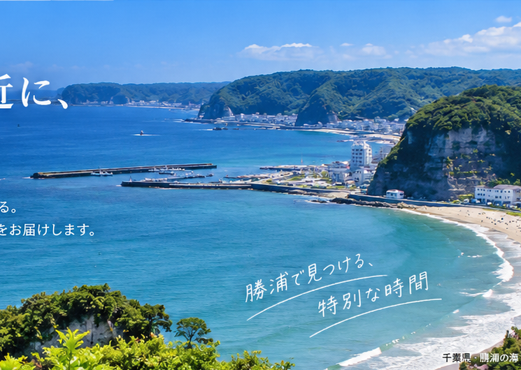

KAIRIN TOURIST
旅をもっと身近に、
もっと自由に。
旅先で出会う景色、食べ物、人。そのひとつひとつが、人生の思い出になる。海輪ツーリストは、心に残る旅をお届けします。
おすすめの旅を見る ›OUR CONCEPT
旅には、まだ知らない楽しさがある。
海輪ツーリストは、国内旅行を中心に、家族旅行から団体旅行まで幅広い旅をご提案しています。
「どこへ行くか」だけではなく、「誰と、どんな時間を過ごすか」。私たちはその時間そのものを大切にしています。
お客様一人ひとりの希望に寄り添い、また行きたくなる旅を一緒につくります。
海輪ツーリストの約束
- お客様目線の旅行プラン
- 安心して楽しめる旅のサポート
- 地域の魅力を活かした旅
- 一生の思い出になる時間
SERVICE
旅行サービス
目的に合わせた旅をご提案します。
🌊
国内旅行
北海道から沖縄まで、日本各地の魅力を楽しむ旅行をご提案します。
👨👩👧👦
家族旅行
小さなお子様からご家族みんなで楽しめる、思い出づくりの旅をご提案します。
🚌
団体旅行
社員旅行、親睦旅行、グループ旅行など、人数や目的に合わせてプランニングします。
RECOMMENDED TOUR
勝浦で見つける、特別な時間。

NEWS
お知らせ
2026.09.01
秋のおすすめ旅行特集を公開しました。
2026.08.20
海輪ツーリスト公式ホームページを開設しました。
2026.07.15
夏季旅行商品の受付を開始しました。
COMPANY
会社概要
| 会社名 | 海輪ツーリスト |
|---|---|
| 代表取締役 | 海輪 直行 |
| 事業内容 | 国内旅行・団体旅行・旅行企画・旅行手配 |
| 所在地 | 東京都中央区 |
| 設立 | 2018年4月 |
| 営業時間 | 平日 9:00～18:00 |
| 定休日 | 土曜日・日曜日・祝日 |
CONTACT